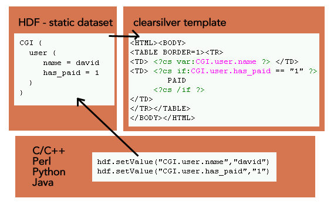

ClearSilver 是一种基于C开发的，快速、高效且功能强大的模板语言，它被设计用来生成各种静态和动态的Web页面。它严格的将页面展现和业务逻辑分开，使得页面设计人员能够专注于展现逻辑的设计和开发。并且，它提供了多种语言的访问接口，增强了其通用型和可扩展性。
CS 模板系统包含两个组成部分：Dataset和Template Files。其中Dataset 为一种树状的数据结构，它被Template Files所引用，并生成最后的页面。CS模板结构如下图所示：

在上图中，Template Files 通常为静态页面元素以及CS 语句的组合，其中的CS 语句通过变量名称来引用dataset中的数据，并通过一定的语法规则生成动态的内容。 产品中引入CS之后，我们可以将静态的页面元素写入到模板文件中，而将XML数据源以及后台的参数导入到Dataset数据结构中，通过CS的库函数调用Dataset和Template File来生成整个动态页面。 这样一来，我们的模板开发人员只需要了解基本的CS语法，就可以开发模板文件了。并且在开发过程中无需了解Erlang语言及EWP其他组成，可以专注于页面元素的设计和实现。
XHTML标记和CS代码都是以<开头的，在XHTML中嵌套CS代码解析的时候虽不会出错，但CS文件本身不符合XML规范，所以，我们扩展的CS语法支持#{cs … }#格式来代替原有的<?cs … ?>格式。比如：
<input type='radio' name='payAccount' value ='<?cs var:account.id ?>'>
可以写成
<input type='radio' name='payAccount' value ='#{cs var:account.id }#'>
对于在XHTML中嵌入的CS代码，我们规定必须使用这样的代码。只有这样，我们才能使用IDE提供的XML语法检查功能，保证我们编写的模板语法正确。
变量的替换和定义包含：var, evar，lvar,include,linclude,set,name。
我们使用比较多的是：var,include,linclude,set，下面只介绍经常用的命令。
var的使用举例：<?cs var:res.tranCode?>,这个简单的语句就会把tranCode值打印出来，var相当于数据类型，后面是参数值。
与C中的include是一个意思，把文件包含进来，例：
<?cs include:"gdb_util"?>
注意需要添加引号。
与我们经常用的linclude是一个意思，例：
<?cs if:res.tranCode=MB1001?>
<?cs linclude:"gdb_MB1001.cs"?>
<?cs elif: res.tranCode=MB1002?>
<?cs linclude:"gdb_MB1002.cs"?>
<?cs /if?>
这3行的意思是当tranCode的值为MB1001时，执行文件gdb_MB1001.cs中的代码。
使用举例：
<?cs set:account=""?>
意思是把account设定值为空。
<?cs set:i=#5?>
<?cs loop:x=1,10,1?>
<?cs set:i = i+1?>
<?cs /loop?>
此时，i的值为5。注：这里数字都用#1，#2来代替，CS模板中数字都写成#1，#2的形式。
控制语句就是控制语句流向，命令有：if, else, elif, alt
常用的是前3个，alt一般很少用到，在此略过。前3个命令与其他语言的含义完全相同，无论我们学习什么语言，都会学习if…else语句，这里的if else 也是一个意思，举几个例子大家就会明白了。
<?cs if:#1?>当前的数字是1<?cs /if?>
<?cs if:#1?>
当前数字是1
<?cs else?>
数字不是1
<?cs /if?>
<?cs if:#1?>
当前数字是1
<?cs elif:#2?>
当前数字是2
<?cs else?>
数字为其他
<?cs /if?>
由于CS模板中数字的都写成#1，#2的形式。所以在该段代码中，数字都用#1，#2来代替。
命令有：each, loop, with
我们常用的是each，loop也会用一点，但是比较少，with基本不用。介绍each和loop。
报文：
<res>
<item>12</item>
<item>23</item>
<item>34</item>
</res>
each，就是遍历，当res父节点下有多个item子节点，each命令使用在res.item上时，each会依次遍历res.item.0，res.item.1， res.item.2。例：
<?cs each:items=res.item?>
<?cs var:items?>
<?cs /each?>
第一行依次遍历item节点，第二行把item的三个值输出，第三行结束标志。
loop，就是循环。举个例子你就会明白：
<?cs loop:x = #1, #5, #2 ?><?cs var:x ?>, <?cs /loop ?>
-> 1, 3, 5
<?cs loop:x = #1, #205, #2 ?><?cs var:x ?>, <?cs /loop ?>
-> 1, 3, 5... 205
<?cs loop:x = #205, #1, "-2" ?><?cs var:x ?>, <?cs /loop ?>
-> 205, 203, 201, ... 1
宏的命令：def, call。
def，定义宏的命令。例如：
<?cs def:map_val(val, map) ?>
<?cs each:item = map ?>
<?cs if:val == item ?>
<?cs var:item.value ?>
<?cs /if ?>
<?cs /each ?>
<?cs /def ?>
第一行定义宏map_val(val, map)，第二行遍历map并赋值给item，第三行如果item值等于val，第四行输出item的value值，五行以后都是结束标记。
call，就是调用函数（宏）
在上面我们定义了map_val(val, map)这样一个函数（宏），现在我们想调用这个函数，可以写成如下形式：
<?cs call: map_val (res.tranCode,res.list.row)?>
参数可以任意写成我们想要的“实参”。
CS定义的函数有很多，在此不一一列举，只介绍我们经常使用的几个。
subcount(var)这个函数返回子节点的个数。比如subcount(res)，如果res下面有5个子节点，那么这句话返回的结果是：5。 注意：当res父节点下有多个item子节点，可以用subcount(res)得到item子节点的个数，但是当res下只有一个item子节点的时候，返回不为1，为子节点个数。
string.slice(expr, start, end)切片操作，第一个参数为一个string类型的表达式，后两个参数为数值型的表达式。这个函数根据start（开始位置）和end(结束位置)返回一个string类型的表达式。例如：
<?cs def:time(s)?>
<?cs var:string.slice(s,0,2)?>:<?cs var:string.slice(s,2,4)?>
<?cs /def?>
调用这个函数<?cs call:time(today.time)?>时，如果参数（today.time）的值是1530，那么输出的结果为：15:30。
<?cs var:string.slice(s,0,2)?>这部分代码把1530切成15，<?cs var:string.slice(s,2,4)?>把1530切成30。
string.find(string, substr)
查找函数，第一个参数是一个string类型的表达式，第二个参数是想要查找的表达式。它会返回substr表达式的数字位置（如果找到的话），否则返回-1。 举个例子：<?cs var:string.find(res.attr.query,"gameType")?>
这句话会从res.attr.query这个字符串中查找gameType字符串，需要注意的是返回的数字位置是gameType字符串首字母的位置。
这里涉及到了一个attr，它是一个属性，res.attr.query用这种方式可以取到res的query属性的值。
对于XML报文：
<res query="tranCode=MB1001&gameType=0200"></res>
用res.attr.query就可以取到值tranCode=MB1001&gameType=0200。
string.length(expr)，计算表达式的长度。expr参数是具体的我们想返回的表达式。如果想研究更多的CS语法，参见：http://www.clearsilver.net/docs/
<?xml version="1.0" encoding="utf-8"?>
<res>
<tranCode>MB0102</tranCode>
<status>
<value>0</value>
<msg>Error</msg>
</status>
<myAccount name="test">
<id>405512201401127**</id> <!--账户-->
<type>借记卡的代码</type><!--账户类型-->
<currency>人民币的代码</currency><!--货币种类-->
<balance>123001.00</balance><!--余额-->
</myAccount>
<myAccount name="test">
<id>405512201401127**</id> <!--账户-->
<type>借记卡的代码</type><!--账户类型-->
<currency>人民币的代码</currency><!--货币种类-->
<balance>123001.00</balance><!--余额-->
</myAccount>
<myAccount name="test">
<id>405512201401127**</id> <!--账户-->
<type>借记卡的代码</type><!--账户类型-->
<currency>人民币的代码</currency><!--货币种类-->
<balance>123001.00</balance><!--余额-->
</myAccount>
</res>
当res.myAccount有一个的时候，使用res.myAccoun访问。当res.myAccount有多个的时候，使用res.myAccoun.0访问第一个元素。不论res.myAccount有一个或多个，都可以用each的方式遍历。
<?cs each:account = res.myAccount ?>
<?cs /each ?>
CS中的自定义函数都是以宏的形式存在的，所以在函数中的空格会返回在调用的结果中，比如：
<?cs def:alias_id(alias,id) ?>
<?cs if:alias==""?>
<?cs var:id ?>
<?cs elif:alias==id?>
<?cs var:id ?>
<?cs else ?>
<?cs var:alias ?>/<?cs var:id ?>
<?cs /if?>
<?cs /def ?>
调用：
***<?cs call:alias_id("abc", "123") ?>***
输出：
*** abc/123***
在abc前会出现一段空格，所以，如果函数中不能留空格，应该以下面的方式写：
<?cs def:alias_id(alias,id) ?>
<?cs if:alias==""?>
<?cs var:id ?>
<?cs elif:alias==id?>
<?cs var:id ?>
<?cs else ?>
<?cs var:alias ?>/<?cs var:id ?>
<?cs /if?>
<?cs /def ?>